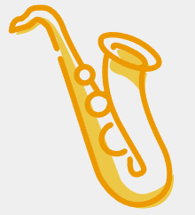

Winds
As the name suggests, wind instruments use air as a medium to produce sounds of different pitches.
Wind instruments will have a mouthpiece to work on the principles of sound waves, resonance, and harmonics.
Acoustics can be set and altered by changing how one blows into the instrument.
What are "Reeds"?
Reeds, typically made from cane, have a rough rectangular shape that tapers towards the tip. In single reed instruments the back of this piece sits against the mouthpiece and vibrates to create sound.
With double reed instruments the two reeds vibrate against each other instead.
| Woodwind Instruments in Categories | |||||
|---|---|---|---|---|---|
| Woodwind Types | Brass Types | ||||
| Flute Types | Reed Types | ||||
| Open Flute | Closed Flute | Single-Reed | Double-Reed | Valved | Slide |
| Flute | Recorder | Clarinet | Oboe | Trumpet | Trombone |
| Piccolo | Ocarina | Saxophone | Bassoon | French Horn | |
| Panpipes | Shawms | Tuba | |||